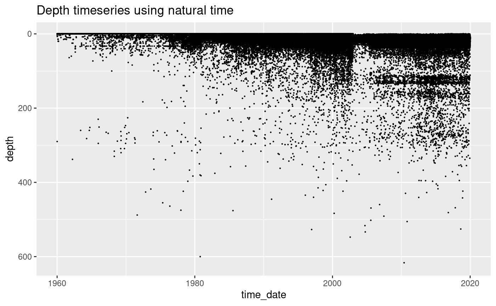
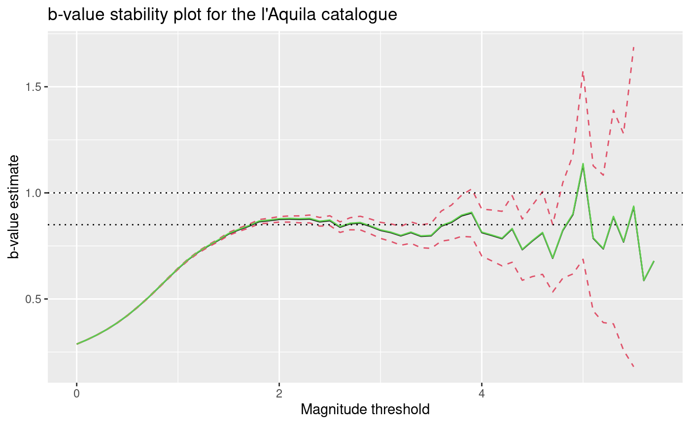

1. Exploratory Data Analysis: Italian Earthquake Catalogue - Horus
Mark Naylor
2023-06-27
Source:vignettes/articles/EDA_Italy_Horus.Rmd
EDA_Italy_Horus.RmdPrior to any statistical analysis, it is important to explore the properties of the dataset. Earthquake catalogues are composed of estimates of the spatial location of events, their data-time, a measure of their magnitude and their depth. The depth is most prone to uncertainty and artefacts, followed by the estimate of the magnitude for which there can be a range of values depending upon the method used to estimate it. Some catalogues also attempt to estimate uncertainty in these parameters.
Below, we provide examples of the sorts of plots you can do to
understand important features of catalogue data. -
ETAS.inlabru currently requires that a b-value to descrive
the frequency-magnitude of earthquakes is provided to the model, so we
show how this can be evaluated. - We have choices in how we subset data
for regional events, and we use the example of l’Aquila to show how this
can be implemented.
What we don’t show in this notebook is how to input the data into a dataframe in the first place. We reccommend using the same column names as below so that it is easy to copy and modify the code.
Load an earthquake catalogue
Earthquake data is stored in the so-called earthquake catalogues. Many different catalogues exists for the same region and there is no easy way to decide which one is better. Here, we provide the HOmogenized instRUmental Seismic (HORUS) catalogue from 1960 to 2020. It can be downloaded from http://horus.bo.ingv.it/. A subset (see data-raw/horus.R for how the the subset was created) of the information in the Horus catalogue can be loaded using
# load HORUS catalogue
data(horus, package = "ETAS.inlabru")
# transform time string in Date object
horus$time_date <- as.POSIXct(
horus$time_string,
format = "%Y-%m-%dT%H:%M:%OS"
)
head(horus)
#> time_string lon lat depth M time_date
#> 1 1960-01-03T20:19:34 15.3000 39.3000 290 6.34 1960-01-03 20:19:34
#> 2 1960-01-04T09:20:00 13.1667 43.1333 0 3.94 1960-01-04 09:20:00
#> 3 1960-01-06T15:17:34 12.7000 46.4833 4 4.69 1960-01-06 15:17:34
#> 4 1960-01-06T15:20:53 12.7000 46.4667 0 4.14 1960-01-06 15:20:53
#> 5 1960-01-06T15:31:00 12.7500 46.4333 0 3.00 1960-01-06 15:31:00
#> 6 1960-01-06T15:45:00 12.7500 46.4333 0 3.00 1960-01-06 15:45:00
# Set df_cat to be the catalogue we want to analyse and then use this below
df_cat <- horus
# Add an integer id to each event
df_cat$event_num <- seq.int(nrow(df_cat))
# Generate an sf version of the catalogue where the longitude and latitude are
# converted to a point object
df_cat.sf <- st_as_sf(df_cat,
coords = c("lon", "lat"),
crs = crs_wgs84
)
head(df_cat.sf)
#> Simple feature collection with 6 features and 5 fields
#> Geometry type: POINT
#> Dimension: XY
#> Bounding box: xmin: 12.7 ymin: 39.3 xmax: 15.3 ymax: 46.4833
#> Geodetic CRS: WGS 84
#> time_string depth M time_date event_num
#> 1 1960-01-03T20:19:34 290 6.34 1960-01-03 20:19:34 1
#> 2 1960-01-04T09:20:00 0 3.94 1960-01-04 09:20:00 2
#> 3 1960-01-06T15:17:34 4 4.69 1960-01-06 15:17:34 3
#> 4 1960-01-06T15:20:53 0 4.14 1960-01-06 15:20:53 4
#> 5 1960-01-06T15:31:00 0 3.00 1960-01-06 15:31:00 5
#> 6 1960-01-06T15:45:00 0 3.00 1960-01-06 15:45:00 6
#> geometry
#> 1 POINT (15.3 39.3)
#> 2 POINT (13.1667 43.1333)
#> 3 POINT (12.7 46.4833)
#> 4 POINT (12.7 46.4667)
#> 5 POINT (12.75 46.4333)
#> 6 POINT (12.75 46.4333)The data reports for each earthquake the time as a string
(time_string), the longitude (lon) and
latitude (lat) of the epicentre, the depth in kilometres
(depth), and the moment magnitude (M).
Get map and extract crs for the map
We download a polygon file for the national boundary of Italy for use later in this notebook.
italy.map <-
ne_countries(country = "Italy", returnclass = "sf", scale = "medium")
italy.crs <- crs(italy.map)
print(italy.crs)
#> [1] "GEOGCRS[\"WGS 84\",\n DATUM[\"World Geodetic System 1984\",\n ELLIPSOID[\"WGS 84\",6378137,298.257223563,\n LENGTHUNIT[\"metre\",1]]],\n PRIMEM[\"Greenwich\",0,\n ANGLEUNIT[\"degree\",0.0174532925199433]],\n CS[ellipsoidal,2],\n AXIS[\"geodetic latitude (Lat)\",north,\n ORDER[1],\n ANGLEUNIT[\"degree\",0.0174532925199433]],\n AXIS[\"geodetic longitude (Lon)\",east,\n ORDER[2],\n ANGLEUNIT[\"degree\",0.0174532925199433]],\n ID[\"EPSG\",4326]]"
ggplot() +
geom_sf(data = italy.map) +
theme_bw() +
ggtitle("Map of the Italian territorial boundary and coastline")Exploratory Data Analysis on the whole of Italy using the Horus catalogue
Histogram of event depths
The histogram of depth data with 1km bins initially looks reasonable except for the artefact of a cluster of events at zero depth.
hist(
df_cat$depth,
breaks = seq(650, -5, -1),
xlim = c(-5, 40),
main = "Histogram of depths, 1km bins",
xlab = "Depth [km]"
)However, when we reduce the bin width to 100m we see that there are more artefacts in the data. The spikes at 0, 5, 10 and 11km are artefacts of the depth estimation, one cause is that that the algorithms may have got stuck at their starting values.
hist(
df_cat$depth,
breaks = seq(650, -5, -0.1),
xlim = c(-5, 40),
main = "Histogram of depths (100m bins)",
xlab = "Depth [km]"
)The magnitude time series shows how the completeness of intermediate and deep events has improved over time.
ggplot(df_cat, aes(x = time_date, y = depth)) +
geom_point(size = 0.1) +
ylim(620, 0) +
ggtitle("Depth timeseries using natural time")
#> Warning: Removed 3 rows containing missing values or values outside the scale range
#> (`geom_point()`).
Plot of event magnitudes using natural time
Natural time refers to where we plot each event evenly spaced along the x-axis. The advantage of this is that data that occurs in periods of high activity are spread out, which means that we can see structure in the data when the rates are high.
Below we plot the magnitude of the events on the y-axis and natural time on the horizontal.
Some of the observations are:
- There are over 40,000 events with magnitude data
- There is a cluster of events with which is likely to be an artefact of how the catalogue is generated
- There are period of time when the data are all rounded to 1 decimal place producing horizontal banding
- At other times, some of the data is not rounded
- The sensitivity at the lowest magnitudes varies in time as can be seen by the changes in the lowest magnitudes
ggplot(df_cat, aes(x = event_num, y = M)) +
geom_point(size = 0.1) +
ggtitle("Magnitude timeseries using natural time")Plot of event magnitudes using date-time
Here we present the same data as in the previous plot, but plotted against the data-time. Clustered events now sit on top of each other. We get a better representaion of how the data density increases towards the modern day and how the magnitude incompleteness varyies in time.
ggplot(df_cat, aes(x = time_date, y = M)) +
geom_point(size = 0.1) +
ggtitle("Horus catalogue magnitude time series")
#> Warning: Removed 1 row containing missing values or values outside the scale range
#> (`geom_point()`).
The number of events occuring each year is difficult to assess in this plot, so below we group the data by year and count the number of events occuring each year. The plot of this shows how the number of events being recorded each year is gradually increasing. This artefact is due to the gradual increase in the sensitivity of the network, not that the seismicity is systematically increasing.
df_cat$Time <- as.Date(df_cat$time_date)
print("Extract year")
#> [1] "Extract year"
# extract the year and convert to numeric format
df_cat$Year <- as.numeric(format(df_cat$Time, "%Y"))
countEventsInYear <- df_cat %>%
group_by(Year) %>%
summarize(counts = n())
plot(
countEventsInYear,
type = "l",
main = "Annual number of events for whole catalogue"
)
# Filtered for M>4
ggplot(df_cat[df_cat$M > 4, ], aes(x = time_date, y = M)) +
geom_point(size = 0.1) +
ggtitle("Whole catalogue magnitude timeseries for M>4")
#> Warning: Removed 1 row containing missing values or values outside the scale range
#> (`geom_point()`).
countEventsInYear <- df_cat[df_cat$M >= 4, ] %>%
group_by(Year) %>%
summarize(counts = n())
plot(countEventsInYear, type = "l", main = "Annual number of events with M>=4")
abline(h = mean(countEventsInYear), col = 2)
#> Warning in mean.default(countEventsInYear): argument is not numeric or logical:
#> returning NAFrequency-magnitude analysis for Horus catalogue
The traditional GR plot shows cumulative data (red) and we also show the incremental data (black). I personally prefer looking at the incremental data because it is not correlated and therefore easier to understand how Poisson counting errors account for uncertainty in the data.
There are three domains in a standard GR plot. - At low magnitudes there will always be incompleteness due to limitations of the monitoring network - A requirement of GR being a good model is that there is a log-linear portion of the data where the slope is stable, this slope is refered to as the b-value - At high magnitudes there will always be fluctuations in the magnitudes due to the effect of counting errors on bins with low rates
minMag <- 1.5
maxMag <- max(df_cat$M)
mags <- df_cat[df_cat$M > minMag, ]$M
tmp <- hist(mags, breaks = seq(minMag - 0.05, maxMag + 0.1, 0.1), plot = FALSE)
N.counts <- length(tmp$counts)
tmp$cumulativeCounts <- cumsum(tmp$counts[N.counts:1])[N.counts:1]
m.min <- 4
bin_m.min <- which(tmp$mids == m.min)
freq_m.min <- tmp$counts[bin_m.min]
b <- 1
x <- tmp$mids
y <- freq_m.min * 10^(-b * (x - m.min))
y.cum <- tmp$cumulativeCounts[bin_m.min] * 10^(-b * (x - m.min))
ggplot() +
geom_point(aes(x = tmp$mids, y = tmp$counts)) +
geom_point(aes(x = tmp$mids, y = tmp$cumulativeCounts),
color = "red",
pch = "+",
size = 2
) +
scale_y_log10() +
ggtitle(paste("Frequency-magnitude plot with arbitary GR dist: b =", b)) +
xlab("Magnitude") +
ylab("log10(Frequency)") +
geom_line(aes(x = x, y = y)) +
geom_line(aes(x = x, y = y.cum), color = "red") +
geom_vline(xintercept = m.min, lty = 2)
#> Warning in scale_y_log10(): log-10 transformation introduced
#> infinite values.
b-value stability plot for the events in the Horus catalogue
minMag <- 2
maxMag <- max(df_cat$M, na.rm = TRUE)
mags <- df_cat[df_cat$M >= minMag, ]$M
x <- seq(minMag, maxMag, 0.1)
b.stability.list <- c()
b.error.list <- c()
m.mean <- c()
b_utsu <- c()
b_guttorp <- c()
b_elst <- c()
delta_b_utsu <- c()
b_elst_lower <- c()
b_elst_upper <- c()
max.index.x <- length(x) - 5
for (i in 1:max.index.x) {
mag.threshold <- x[i]
mags.subset <- mags[mags > mag.threshold]
N <- length(mags.subset)
b_utsu[i] <- 1 / (log(10) * (mean(mags.subset) - mag.threshold + 0.05))
delta_b_utsu[i] <- log(10) * b_utsu[i]**2 *
sqrt(sum((mags.subset - mean(mags.subset))**2) / (N * (N - 1)))
b_guttorp[i] <- 1 / (2 * 0.05 * log(10)) *
log((mean(mags.subset) - mag.threshold + 2 * 0.05) /
(mean(mags.subset) - mag.threshold))
deltaMags <- diff(mags.subset)
deltaMags_p <- deltaMags[deltaMags > 0.1]
N <- length(deltaMags_p)
b_elst[i] <- 1 / (2 * 0.05 * log(10)) *
log((mean(deltaMags_p)) / (mean(deltaMags_p) - 0.1))
c <- 10**(0.1 * b_elst[i])
b_elst_lower[i] <- 1 / (0.1 * log(10)) *
log((c + sqrt(c / N)) / (1 + sqrt(c / N)))
b_elst_upper[i] <- 1 / (0.1 * log(10)) *
log((c - sqrt(c / N)) / (1 - sqrt(c / N)))
}
ggplot() +
geom_line(aes(x = x[1:max.index.x], y = b_utsu)) +
geom_line(
aes(x = x[1:max.index.x], y = b_utsu + delta_b_utsu),
color = 2,
lty = 2
) +
geom_line(
aes(x = x[1:max.index.x], y = b_utsu - delta_b_utsu),
color = 2, lty = 2
) +
geom_line(
aes(x = x[1:max.index.x], y = b_guttorp),
color = 3, lty = 1
) +
xlab("Magnitude threshold") +
ylab("b-value estimate") +
geom_hline(yintercept = 1, lty = 3) +
geom_hline(yintercept = 0.85, lty = 3) +
ggtitle("b-value stability plot for Horus catalogue")
Heatmap of the events in the Horus catalogue
ggplot() +
geom_hex(data = df_cat[df_cat$M > 3, ], aes(x = lon, y = lat), bins = 50) +
scale_fill_continuous(type = "viridis") +
geom_sf(
data = italy.map,
fill = alpha("lightgrey", 0),
color = "orange",
size = 0.2
) +
ggtitle("Density plot for M>3 events") +
theme_bw()
Map of the events in the Italian Horus catalogue
Here we plot the location of the seismicity on a map. The outline of the Italy territory is shown in green.
ggplot() +
geom_sf(data = df_cat.sf[df_cat$M > 3, ], size = 0.05) +
geom_sf(
data = italy.map,
fill = alpha("lightgrey", 0),
color = "green",
linewidth = 0.7
) +
geom_sf(data = df_cat.sf[df_cat$M > 5, ], size = 0.5, color = "orange") +
geom_sf(data = df_cat.sf[df_cat$M > 6, ], size = 0.5, color = "red") +
ggtitle("Map of event locations")
eventDate <- ymd_hms("2009-04-06 00:00:00")
endDate <- eventDate + days(400)
startDate <- eventDate - days(50)
deltaLat <- 2.4
latLims <- c(42.2, 42.5)
longLims <- c(13, 13.75)
ggplot() +
geom_point(data = df_cat[df_cat$M > 3, ], aes(time_date, lat), size = 0.1) +
geom_point(
data = df_cat[df_cat$M > 5, ],
aes(time_date, lat),
size = 1.2,
color = "orange"
) +
geom_point(
data = df_cat[df_cat$M > 6, ],
aes(time_date, lat),
size = 1.5,
color = "red"
) +
ggtitle("Italian latitude-time plot") +
geom_rect(
aes(
xmin = as.POSIXct(startDate),
xmax = as.POSIXct(endDate),
ymin = latLims[1],
ymax = latLims[2]
),
alpha = 0.4,
fill = "blue",
color = "blue"
)
#> Warning: Removed 1 row containing missing values or values outside the scale range
#> (`geom_point()`).Analysis if the L’Aquila Sequence
To focus on the L Aquila seismic sequence is sufficient to retain only the observations in a specific space-time-magnitude region that include the sequence of interest. For the L’Aquila sequence, we retain all the events with magnitude greater or equal than happened during 2009 with longitude in and latitude in . The L’Aquila sequence selected in this way should be composed by 1024 events. Any other seismic sequence can be selected similarly.
To do the selection is convenient to transform the time string in a
Date object and to select the rows of the Horus catalogue
verifying the conditions.
start.date = “2009-04-06 00:00:00 BST” end.date = “2010-01-01 00:00:00 BST” magnitude.completeness = 2.49 min.longitude = 13.00 max.longitude = 13.75 min.latitude = 42.2 max.latitude = 42.5
eventDate <- ymd_hms("2009-04-06 00:00:00")
endDate <- eventDate + days(400)
startDate <- eventDate - days(50)
deltaLat <- 2.4
latLims <- c(42.2, 42.5)
longLims <- c(13, 13.75)
minMAG <- 0
# Subset the main catalogue
df_cat.subset <- df_cat[df_cat$M >= minMAG, ]
df_cat.subset <- df_cat.subset[(df_cat.subset$lat > latLims[1]), ]
df_cat.subset <- df_cat.subset[(df_cat.subset$lat < latLims[2]), ]
df_cat.subset <- df_cat.subset[(df_cat.subset$lon > longLims[1]), ]
df_cat.subset <- df_cat.subset[(df_cat.subset$lon < longLims[2]), ]
head(df_cat.subset)
#> time_string lon lat depth M time_date
#> 243 1961-03-25T10:40:00 13.3167 42.4333 0 3.64 1961-03-25 10:40:00
#> 295 1961-10-05T19:59:35 13.0167 42.3500 3 0.00 1961-10-05 19:59:35
#> 302 1961-10-31T00:00:00 13.0167 42.3500 10 3.94 1961-10-31 00:00:00
#> 303 1961-10-31T00:00:00 13.0167 42.3500 10 3.94 1961-10-31 00:00:00
#> 304 1961-10-31T13:37:18 13.0833 42.4167 4 4.64 1961-10-31 13:37:18
#> 305 1961-10-31T13:41:59 13.0833 42.4167 0 4.14 1961-10-31 13:41:59
#> event_num Time Year
#> 243 243 1961-03-25 1961
#> 295 295 1961-10-05 1961
#> 302 302 1961-10-31 1961
#> 303 303 1961-10-31 1961
#> 304 304 1961-10-31 1961
#> 305 305 1961-10-31 1961Plot of the event magnitude time series: l’Aquila
ggplot() +
geom_point(
data = df_cat.subset[df_cat.subset$M > 3, ], aes(time_date, lat), size = 0.1
) +
geom_point(
data = df_cat.subset[df_cat.subset$M > 5, ],
aes(time_date, lat),
size = 1.2,
color = "orange"
) +
geom_point(
data = df_cat.subset[df_cat.subset$M > 6, ],
aes(time_date, lat),
size = 1.5,
color = "red"
) +
ggtitle("L'Aquila latitude-time plot") +
geom_rect(
aes(
xmin = as.POSIXct(startDate),
xmax = as.POSIXct(endDate),
ymin = latLims[1],
ymax = latLims[2]
),
alpha = 0.4, fill = "blue", color = "blue"
)
minMag <- 0
maxMag <- max(df_cat.subset$M, na.rm = TRUE)
mags <- df_cat.subset[df_cat.subset$M >= minMag, ]$M
tmp <- hist(mags, breaks = seq(minMag - 0.05, maxMag + 0.4, 0.1), plot = FALSE)
N.counts <- length(tmp$counts)
tmp$cumulativeCounts <- cumsum(tmp$counts[N.counts:1])[N.counts:1]
m.min <- 4
bin_m.min <- which(tmp$mids == m.min)
freq_m.min <- tmp$counts[bin_m.min]
b <- 1.
x <- tmp$mids
y <- freq_m.min * 10^(-b * (x - m.min))
y.cum <- tmp$cumulativeCounts[bin_m.min] * 10^(-b * (x - m.min))
ggplot() +
geom_point(aes(x = tmp$mids, y = tmp$counts)) +
geom_point(
aes(x = tmp$mids, y = tmp$cumulativeCounts),
color = "red",
pch = "+"
) +
scale_y_log10() +
ggtitle(paste("Frequency-magnitude plot with arbitary GR dist: b =", b)) +
xlab("Magnitude") +
ylab("log10(Frequency)") +
geom_line(aes(x = x, y = y)) +
geom_line(aes(x = x, y = y.cum), color = "red") +
geom_vline(xintercept = m.min, lty = 2)
#> Warning in scale_y_log10(): log-10 transformation introduced infinite values.
#> log-10 transformation introduced infinite values.
b-value stability plot: l’Aquila
minMag <- 0
maxMag <- max(df_cat.subset$M, na.rm = TRUE)
mags <- df_cat.subset[df_cat.subset$M >= minMag, ]$M
x <- seq(minMag, maxMag, 0.1)
b.stability.list <- c()
b.error.list <- c()
m.mean <- c()
b_utsu <- c()
b_guttorp <- c()
b_elst <- c()
delta_b_utsu <- c()
b_elst_lower <- c()
b_elst_upper <- c()
max.index.x <- length(x) - 5
for (i in 1:max.index.x) {
mag.threshold <- x[i]
mags.subset <- mags[mags > mag.threshold]
N <- length(mags.subset)
b_utsu[i] <- 1 / (log(10) * (mean(mags.subset) - mag.threshold + 0.05))
delta_b_utsu[i] <- log(10) * b_utsu[i]**2 *
sqrt(sum((mags.subset - mean(mags.subset))**2) / (N * (N - 1)))
b_guttorp[i] <- 1 / (2 * 0.05 * log(10)) *
log((mean(mags.subset) - mag.threshold + 2 * 0.05) /
(mean(mags.subset) - mag.threshold))
deltaMags <- diff(mags.subset)
deltaMags_p <- deltaMags[deltaMags > 0.1]
N <- length(deltaMags_p)
b_elst[i] <- 1 / (2 * 0.05 * log(10)) *
log((mean(deltaMags_p)) / (mean(deltaMags_p) - 0.1))
c <- 10**(0.1 * b_elst[i])
b_elst_lower[i] <- 1 / (0.1 * log(10)) *
log((c + sqrt(c / N)) / (1 + sqrt(c / N)))
b_elst_upper[i] <- 1 / (0.1 * log(10)) *
log((c - sqrt(c / N)) / (1 - sqrt(c / N)))
}
ggplot() +
geom_line(aes(x = x[1:max.index.x], y = b_utsu)) +
geom_line(
aes(x = x[1:max.index.x], y = b_utsu + delta_b_utsu),
color = 2, lty = 2
) +
geom_line(
aes(x = x[1:max.index.x], y = b_utsu - delta_b_utsu),
color = 2, lty = 2
) +
geom_line(
aes(x = x[1:max.index.x], y = b_guttorp),
color = 3, lty = 1
) +
xlab("Magnitude threshold") +
ylab("b-value estimate") +
geom_hline(yintercept = 1, lty = 3) +
geom_hline(yintercept = 0.85, lty = 3) +
ggtitle("b-value stability plot for the l'Aquila catalogue")
#> Warning: Removed 2 rows containing missing values or values outside the scale range
#> (`geom_line()`).
#> Removed 2 rows containing missing values or values outside the scale range
#> (`geom_line()`).